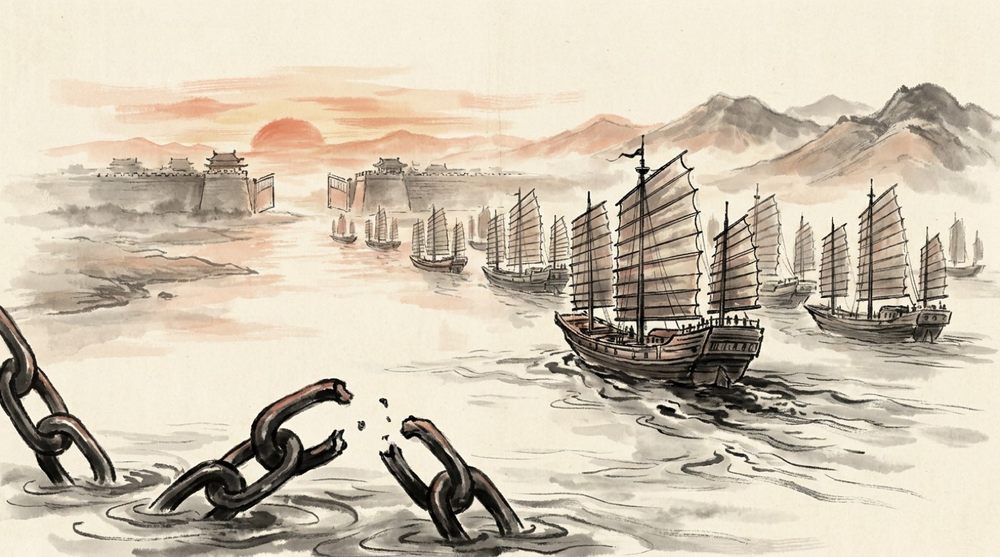

十年、病気のふりをする
諸葛亮が死んで、魏には敵がいなくなりました。 そのぶん、内側で争いが始まります。
若い皇帝を助ける役に、曹一族の曹爽と、老いた 司馬懿の二人がつきました。 曹爽は司馬懿を名誉職に押し上げて、実権から遠ざけます。
司馬懿は、抵抗しませんでした。 かわりに病気になります。舌が回らないふりをし、 差し出された粥をこぼし、見舞いの使者に「もう長くありません」と思わせました。 使者は帰って報告します——「あの老人はもう終わりです」。
249年、曹爽が皇帝と一緒に都を出て墓参りに行った日。 司馬懿は寝床から起き上がり、たった一日で都をおさえました。 高平陵の変。七十歳のクーデターです。
この日から、魏という国の中身は司馬家のものになりました。 表向きの皇帝は、まだ曹家のままです。
意地だけで、続ける
いっぽう蜀では、姜維が 諸葛亮のあとをついで、北へ攻め続けていました。
もともと魏の武将です。知恵くらべで諸葛亮に見こまれて蜀に来た人でした。 その恩を返すためだけに、勝ち目のうすい遠征を何度もくり返します。
国はどんどん疲れていきました。 北の守りを支えていた王平は248年に病死。 黄巾の乱のころから戦場にいた廖化は、 七十を過ぎてもまだ前線にいます。 「蜀に大将がいない、廖化が先ぽうだ」と笑われるほど、人がいなくなっていました。
呉のほうも似たようなものです。 孫権は七十一歳まで生きましたが、 年を取るほど疑い深くなり、跡つぎ争いで国を傷つけました。 いちばん愛した歩練師を皇后にしようとして 家来に反対され続け、位をおくれたのは彼女が死んだあとです。 夷陵の英雄陸遜も、その争いに巻きこまれて、 くやしさの中で死んでいます。 残ったのは、雪の中を裸で突撃した丁奉くらいでした。
山を、転げ落ちる
司馬懿が死ぬと、長男の司馬師、 次に弟の司馬昭が実権をつぎました。
司馬昭は、皇帝の座をねらっていることを隠しませんでした。 「司馬昭の心は、道を歩く人でも知っている」と言われたほどです。 逆らった若い皇帝は、自分で剣を取って討ちに出て、あっけなく殺されました。
263年、司馬昭は蜀へ大軍を送ります。 姜維は剣閣という難所で受け止め、正面からは誰も通れませんでした。
ところが鄧艾は、 誰も通らない山を選びました。 農民の子で、うまく話せず、若いころは牛を数える下働きだった男です。 道のない崖を、毛布にくるまって転がり落ちながら越えていきました。
山を抜けた先には、守りの兵がほとんどいません。 劉禅は、成都で降伏しました。 劉備が建てた国は、四十三年で消えます。
高平陵の変（249年）七十歳の老人が、十年の演技のあとに一日で国を取りました。
蜀の滅亡（263年）姜維は正面を守りきったのに、
鄧艾が誰も通らない山を越えて背後に出ました。守りきっても、横から入られたら終わりです。
呉の滅亡（280年）最後まで残った呉も、大軍の前に降伏。
黄巾の乱から九十六年で、天下はひとつに戻りました。
最後の賭け
国が消えても、姜維はあきらめませんでした。
蜀を攻めた魏の将軍・鍾会が、手がらを立てて野心を持ちはじめたのを見て、 姜維はわざとその部下になります。そして反乱をそそのかしました。 魏の軍を内側から割って、そのすきに蜀を建て直す——最後の賭けです。
計画はばれ、姜維は斬られました。 腹を裂かれると、肝が人並みはずれて大きかったと伝わっています。
そしておかしなことに、蜀をほろぼした最大の功労者の鄧艾も、 「裏切るつもりだ」と疑われてつかまり、殺されました。 手がらを立てすぎた人は、味方に殺される。
洛陽に送られた劉禅は、宴席で「蜀がこいしくないか」と聞かれ、 「ここは楽しいので、蜀は思い出しません」と答えました。 ばかな答えとして千八百年笑われ続けています。 ——ただし、そう答えなければ殺されていた、という読み方もできます。 このとき洛陽へ移される道中で、老将廖化が病死しました。 黄巾の乱から蜀の滅亡まで、この物語のすべてを見届けた人でした。

そして、誰もいなくなった
265年、司馬炎が 魏の皇帝から位をゆずり受けました（禅譲）。 新しい国の名は晋。
四十五年前、曹丕が漢の皇帝にやったことと、 手順まで同じでした。奪った家が、同じやり方で奪われたのです。 このとき司馬昭の妻王元姫は、 夫と息子の野心を、家の中からずっと見ていました。
280年、晋の大軍が長江を下り、呉が降伏します。 孫堅が海賊を追い散らしてから、およそ九十年。 孫堅・孫策・孫権の三代が守った国が、ここで終わりました。
184年から280年。九十六年です。
はじめに立ち上がったのは、食べるものがなかった農民たちでした。 その反乱をしずめるために兵を集めた人たちが英雄になり、 国をつくり、殺し合い、そのほとんどが目的を果たせずに死にました。
天下を取ったのは、桃園で誓った三人でも、詩を書いた覇者でもなく、 いちばん我慢した家でした。 そしてその晋も、統一からわずか十数年で内乱に沈みます。
それでも、この九十六年の話は千八百年間、語りつがれてきました。
勝ったからではありません。負け方が、忘れられないからです。
ここまで読んで、気になった人がいたら 武将図鑑でその人のカードを開いてみてください。 八十一人ぜんぶに、その人がなぜ心に残るのかを書いてあります。
もう一度はじめから読むなら 第一章へ。 同じ場面でも、結末を知ってから読むと、まったくちがって見えます。
263年 動く戦場図で見る ▶
- 司馬懿が十年の演技のすえ、七十歳でクーデターを起こし、魏の中身を司馬家のものにした。
- 263年、鄧艾が山を越えて成都を落とし蜀が滅亡。姜維の最後の賭けも失敗した。
- 265年に司馬炎が晋を建て、280年に呉を滅ぼして天下統一。黄巾の乱から九十六年が終わった。